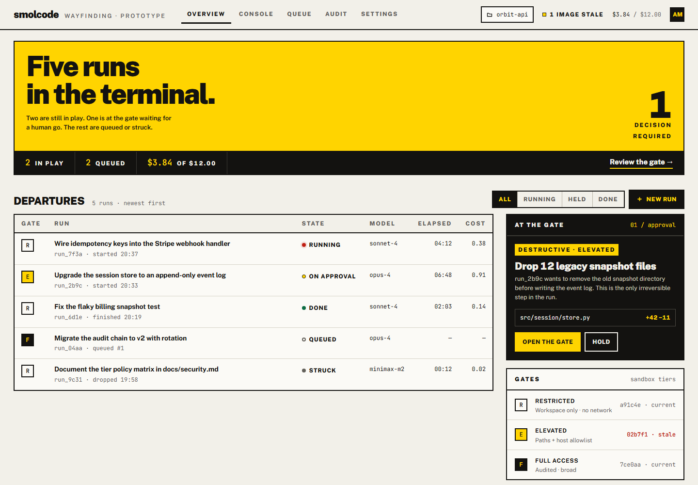
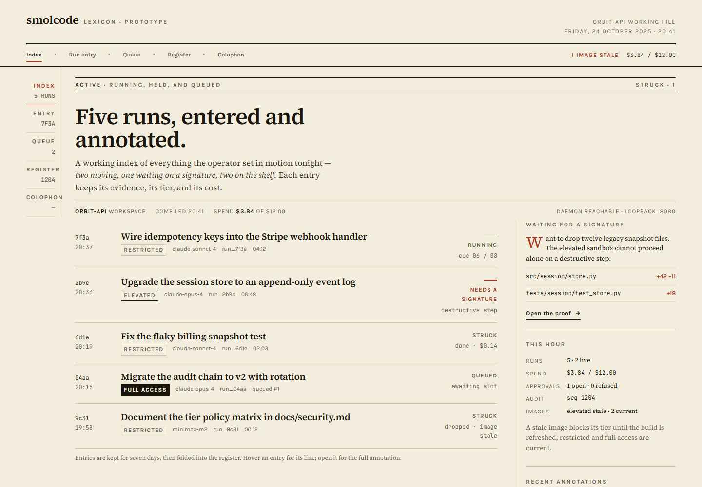

Three ways to run the room.
The same app, rebuilt three times: same screens, same data, same interactions, three committed visual worlds. Open each one, use it, and pick the room you would want to be in at 1am with a run on the sandbox and a destructive diff waiting on your judgment.
What is fixed. All three keep the same product truth: the tier ladder, the approval gate, the audit chain, the inspector, the composer. A direction changes the world, never the behaviour.
What is not real. These are design prototypes, not the shipped app — no backend, no keys, all runs and costs are synthetic. Every screen is clickable: use the nav, open the approval sheet, switch inspector tabs.
directions rolled with the impeccable skill · concept-seed key 71586e88
 01 · open prototype
01 · open prototype
Cuebook
IA prompt book for a late show: warm black, typewriter annotations, and every step given a cue number. The run is a performance; the approval is a held cue waiting for GO.
- Palette
- Type
- Q12 GO Courier Prime · Archivo
- Signature
- The cue sheet: numbered cues, GO and HOLD states, a red rail down the active step.
- Navigation
- Left rail · three panes · sticky composer at the foot

02 · open prototypeWayfinding
IIA terminal that tells you where you stand. Poster yellow, heavy grotesque numerals, tier gates R / E / F, and one huge state band that answers “what is happening?” before you read a word.
- Palette
- Type
- Gate R Public Sans 900 · JetBrains Mono
- Signature
- The state band: run number, state, and sandbox posture as one piece of signage.
- Navigation
- Top tabs · wide departure board · the decision sits in a black gate panel

03 · open prototypeLexicon
IIIA working reference book: cream paper, serif argument, hanging annotations, and diffs set as printer's corrections. The audit register reads like a real register, not a log viewer.
- Palette
- Type
- The register. Source Serif 4 · Karla
- Signature
- Guide words and marginal annotations; corrections in vermilion and olive.
- Navigation
- Shoulder index · editorial column · apparatus criticus on the right
Every prototype carries the whole product.
No direction is a skin of one screen. Each one contains the four places you actually live, with working navigation, a real approval sheet, inspector tabs, and responsive composition down to 390px.
The night's runs, their tiers, states, spend, the open decision, and the queue behind it.
Streamed plan, tool calls, command output, sub-agent line, the held diff, and a composer that stays in reach.
Run evidence, cost and budget, workspace tree with changed files, tier policy matrix.
A full approval sheet bound to a diff, and the hash-chained register with its verification state.
What actually differs.
The product is identical. The world changes how quickly you read state, where the decision sits, and what the tool feels like when nothing is happening.
| Cuebook | Wayfinding | Lexicon | |
|---|---|---|---|
| Room | Dark theatre desk, one lamp | Bright terminal, daylight | Reading room, north light |
| Reads as | A performance being called | A destination being tracked | A record being kept |
| State at a glance | GO / HOLD / STRUCK on the cue rail | Signage band + gate letter | Running head + margin status |
| Where the decision sits | Inside the held cue, plus a side hold card | A black gate panel that interrupts the board | A proof slip, opened from the margin |
| Strongest screen | The cue sheet under load | The overview, at a distance | The register and the diff as correction |
| Cost of the world | Most dramatic; longest visual step from typical dev tools | Loudest colour; needs discipline to stay calm | Least “app-like”; density assumes a patient reader |
| Best fit when | You want the run to feel authored and supervised | You want status legible across the room | You want the audit trail to feel like the product |
How to choose.
- Open all three live runs. Leave each one open for a minute with the approval sheet closed, then open it.
- Find the decision. In each world, how long did it take you to see that something needs your signature?
- Read the register. The audit trail is the product's promise; whichever register you would actually verify is the honest answer.
- Pick the room, not the screenshot. The chosen direction will be rebuilt in React against the real components — density, keyboard, and states included.
My read: Cuebook has the strongest identity and makes approval feel consequential; Wayfinding is the fastest to read and the easiest to defend to another operator; Lexicon makes the audit chain feel like the point of the product. All three pass the same craft floor — contrast, motion, states, responsiveness.
What happens after.
Pick one and it becomes the design contract: tokens, type scale, spacing, component shapes, and the one signature move get written down, then applied to the React app in smolcode/web. The other two are archived as alternatives, not merged.
If none of them is right, say what is wrong with each — the useful note is usually “too loud”, “too editorial”, or “too much chrome” — and I will roll again from the same product truth.
Deliberately not included: provider API-key entry, upload drag-and-drop, and the MCP tool browser. Those are real product surfaces, but they would have been three more screens of the same argument in each world. They come back in the chosen build.